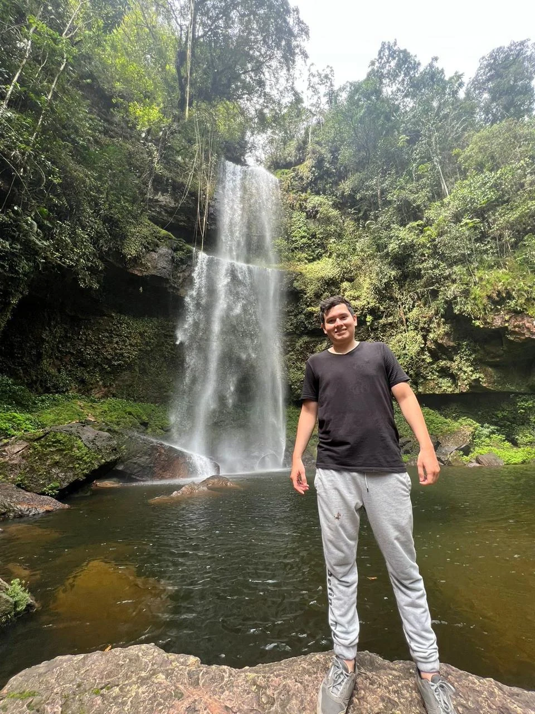
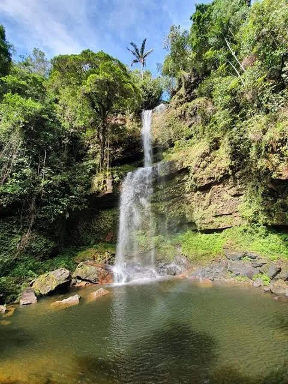
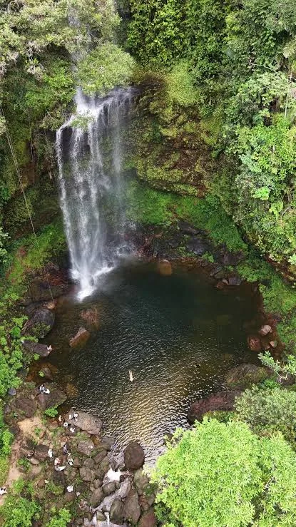
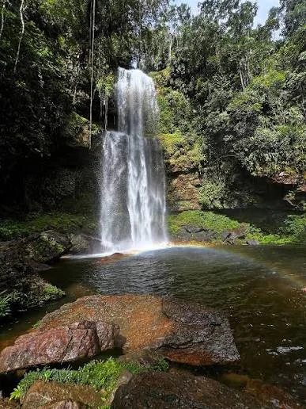

Sobre la experiencia
Conoce el lugar
Hornoyaco es un atractivo natural ubicado en el entorno rural de Mocoa, reconocido por su cascada y por el paisaje de bosque que acompaña el recorrido. El camino permite entrar en contacto con la vegetación característica de la región y disfrutar de un espacio alejado del entorno urbano.
La experiencia está relacionada principalmente con el senderismo, la contemplación del paisaje y el contacto con el agua. Es un lugar apropiado para quienes buscan descubrir algunos de los escenarios naturales que rodean a Mocoa y conocer parte de su riqueza ambiental.



Información para visitantes.